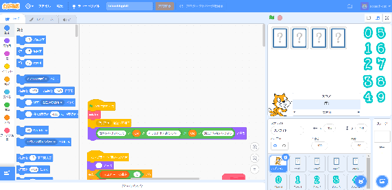
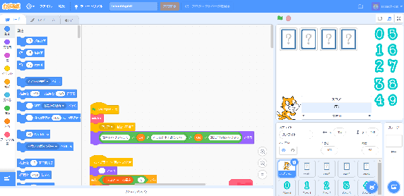
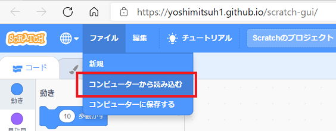
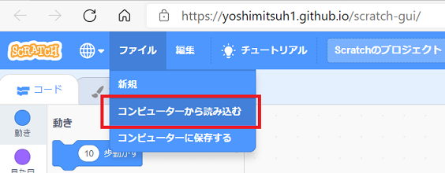

Scratch Extension
[説明]
４桁の数当てゲームです。
コンピュータが４桁の異なる数字を設定します。
数字はすべて０から９までの異なる数字です。
その数字を自分が当てる対話型ゲームです。
こちらが数字を設定して、問い合わせ(猫をクリック)すると
コンピュータが設定した数字と一致しているかをチェックして
数字も桁も合っている場合のかずと数字だけ合ってる場合のかずを答えます。
何回かやり取りして、コンピュータのヒントを元に４桁の数を当てます。
例えば
コンピュータが「0123」を設定した場合
こちらが「3429」としたら、コンピュータの答えは
数字と桁が一致しているかずは、３桁目の「２」だけなので、
「数字が同じで桁も同じ １つ」
どこかの桁に同じ数字がある場合は、「３」だけなので
「数字が同じで桁が違う １つ」
と答えます
この答えを元に何回かというとして、４桁の数字を当てます。
その問い合わせの回数が少ないほど良いという事になります。
コンピュータが４桁の異なる数字を設定します。
数字はすべて０から９までの異なる数字です。
その数字を自分が当てる対話型ゲームです。
こちらが数字を設定して、問い合わせ(猫をクリック)すると
コンピュータが設定した数字と一致しているかをチェックして
数字も桁も合っている場合のかずと数字だけ合ってる場合のかずを答えます。
何回かやり取りして、コンピュータのヒントを元に４桁の数を当てます。
例えば
コンピュータが「0123」を設定した場合
こちらが「3429」としたら、コンピュータの答えは
数字と桁が一致しているかずは、３桁目の「２」だけなので、
「数字が同じで桁も同じ １つ」
どこかの桁に同じ数字がある場合は、「３」だけなので
「数字が同じで桁が違う １つ」
と答えます
この答えを元に何回かというとして、４桁の数字を当てます。
その問い合わせの回数が少ないほど良いという事になります。

[使い方]
（１）まず下記のプログラム(*.sb3)ファイルをダウンロードしてください。
hitanddigit.sb3のダウンロード （リンクをクリックするとダウンロードできます。）
（２）下記URLを開いてください
Scratchソフト：https://yoshimitsuh1.github.io/scratch-gui/
下記のようにしてファイルを呼び出す
（４）呼び出したファイルを実行する
７．「正解」が出たらおしまい
hitanddigit.sb3のダウンロード （リンクをクリックするとダウンロードできます。）
（２）下記URLを開いてください
Scratchソフト：https://yoshimitsuh1.github.io/scratch-gui/
開いたところ：

（３）ダウンロードしたファイルを呼び出す
下記のようにしてファイルを呼び出す
呼び出し方


（４）呼び出したファイルを実行する
１．まず、全画面にするために右上端にある全画面表示アイコンをクリックする
|
もう一度アイコンを押すと元のサイズに戻る |
| ２．次に、スタートボタンの旗をクリックする |
旗を押したところ |
| ３．こちらの数字を設定する為に、右側に並んでいる数字をクリックする |
４．４桁の数字を設定したら猫ををクリックする 猫が答えを言ってくれて、スコアの欄に答えが書き出される |
| ５．設定した数字をクリアする為に、もう一度猫をクリックする |
６．３から繰り返し |